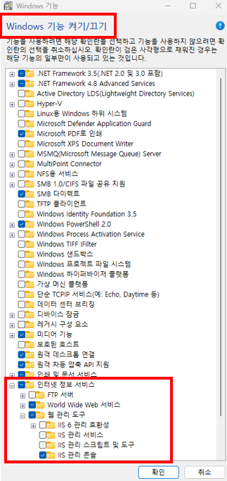
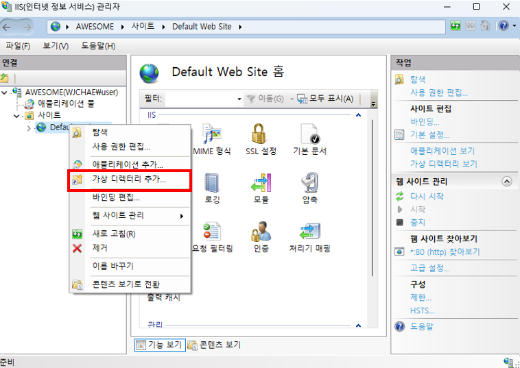
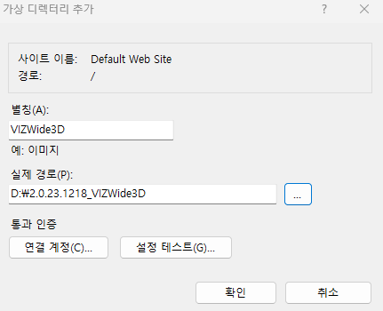
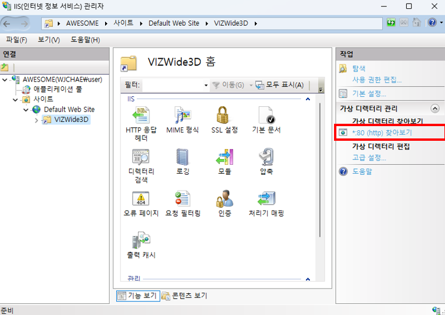
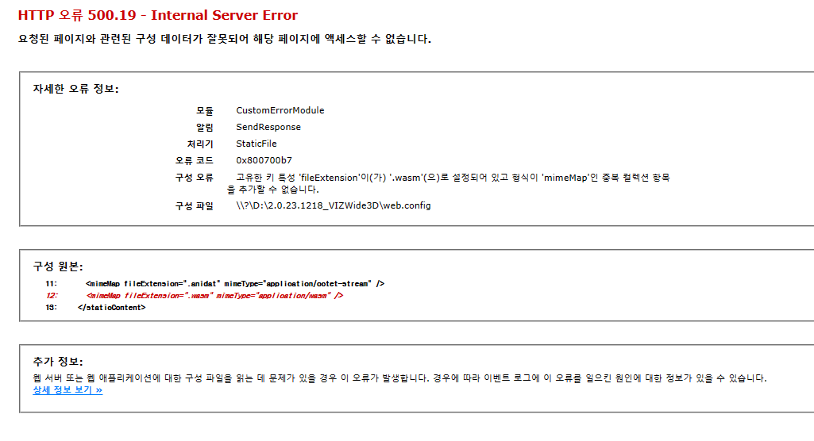
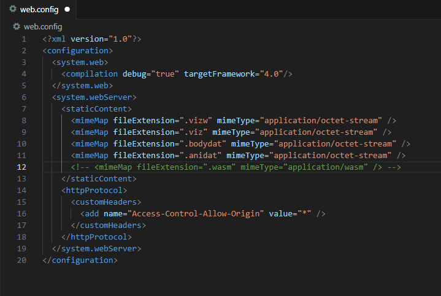
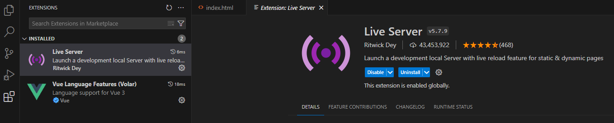
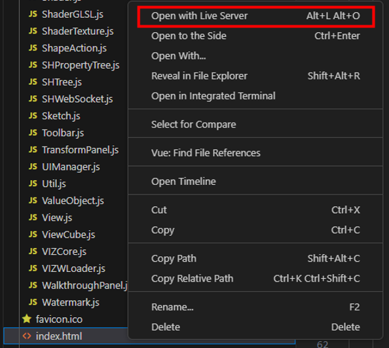
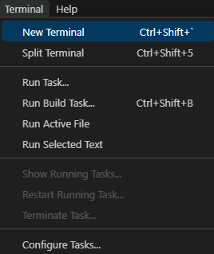
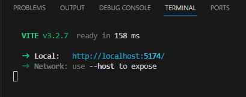

Getting Started
IIS 웹 서버 구성
- IIS 설치
윈도우 검색으로
Windows 기능 켜기/끄기실행인터넷 정보 서비스 항목의 필요한 파일들을 체크 후 설치
필수 항목 : World Wide Web 서비스, IIS 관리 콘솔
 IIS 관리자를 열고 VIZWide3D 경로의 가상 디렉터리 추가
  가상 디렉터리 찾아보기 (페이지 열기)
 - HTTP 500.19 오류 해결 방법
IIS 관리자를 열고 VIZWide3D 실행 시 ".wasm" MIME 형식이 중복됐을 경우 500.19 에러 발생
 VIZWide3D 폴더의 web.comfig 파일을 열고 ".wasm" mimeMap을 제외하여 해결

VIZWide3D 시작
JS에서 VIZWide3D 시작
- 1. jquery 및 css 추가
index.html 파일에 jquery와 VIZCore.css를 추가
jquery : 최신 버전 jquery 설치
<script src="VIZCore/lib/jquery/jquery-3.2.1.js"></script>css :
<link rel="stylesheet" href="VIZCore/Resource/css/VIZCore.css">- 2. VIZCore 추가 및 Instance 생성
es6부터 도입 된 모듈화 방식을 사용하여 실행 코드 구현
//<script>타입을 module로 설정 <script type="module"> //VIZ3DCore, VIZCore 추가 import VIZ3DCore from "./VIZCore/VIZCore.js"; import { VIZCore } from "./VIZCore/VIZCore.js"; //<body>의 view를 변수로 지정 let view = document.getElementById("view"); view.className = "VIZCore"; //VIZ3DCore 인스턴스 생성 let vizcore = new VIZ3DCore(view); ... //Initalization 참조 </script>- 3. Web3D Viewer가 embedded 되어야 하는 영역 설정
- <body> <div id="view"></div> </body>
- 4. VSCode Live Server로 실행
VSCode Extensions 에서 Live Server 설치
 Live Server 실행

Vue에서 VIZWide3D 시작
- 1. Vue 설치 후 프로젝트 생성
- 2. VIZWide3D 추가
생성한 Vue 프로젝트의 src 폴더에 전달받은 VIZCore 폴더 추가
Vue 프로젝트의 public 폴더에 전달받은 VIZCore 폴더 중 lib, Model, Resource 폴더를 추가
- 3. jquery, css 추가
각각의 파일에 jquery와 VIZCore.css를 추가
index.html : 최신 버전 jquery 설치하기
<script src="./src/VIZCore/lib/jquery/jquery-3.2.1.js"></script>main.js :
import './VIZCore/Resource/css/VIZCore.css'- 4. App.vue 작성
App.vue 스크립트의 구조
template 설정
// Web3D Viewer가 embedded 되어야 하는 영역 설정 <template> <div id="app"> <div id='view'></div> </div> </template>VIZCore 추가
//VIZ3DCore, VIZCore 추가 import VIZ3DCore from "./VIZCore/VIZCore.js"; import { VIZCore } from "./VIZCore/VIZCore.js";mounted 수정
//Vue export export default { name: 'App', components: { }, //VIZWide3D mounted mounted() { // VIZCore Instance 생성 let view = document.getElementById("view"); view.className = "VIZCore"; let vizcore = new VIZ3DCore(view); ... //Initialization 참조 } }- 5. VIZWide3D 실행
터미널 실행
 Vue 프로젝트 폴더로 이동 후 실행
명령어 :
npm run dev
전체 코드 구조
- index.html
- <!DOCTYPE html> <html xmlns="http://www.w3.org/1999/xhtml"> <head> <meta charset="utf-8" /> <title>VIZWebCore :: SOFTHILLS</title> <meta name="viewport" content="width=device-width, initial-scale=1.0, minimum-scale=1.0, maximum-scale=1.0,user-scalable=no" /> <script src="VIZCore/lib/jquery/jquery-3.2.1.js"></script> <link rel="stylesheet" href="VIZCore/Resource/css/VIZCore.css"> <script type="module"> import VIZ3DCore from "./VIZCore/VIZCore.js"; import { VIZCore } from "./VIZCore/VIZCore.js"; let view = document.getElementById("view"); view.className = "VIZCore"; let vizcore = new VIZ3DCore(view); //console.log("import - call"); let onSelectEvent = function (event) { // 선택된 모델이 없음 if (event.data.id == -1) { //alert('선택된 모델이 없거나, 기존 선택상태가 해제됨.'); } // 선택된 모델이 있음 else { //console.log(event.data.id); } }; // 파일 로딩 완료 시점 확인 let onModelLoadingCompleted = function (e, loadType) { console.log("Loading Completed :: ", e); if(loadType === VIZCore.Enum.CONFIG_KEY.LOADER.COMPLETEDTIME.STRUCTURE){ console.log("onLoad Structure :: ", e); // 구조정보 로딩 완료 // 모델 정보 확인 및 모델 관련 API 사용 } if(loadType === VIZCore.Enum.CONFIG_KEY.LOADER.COMPLETEDTIME.MESH){ console.log("onLoad Mesh :: ", e); // 모델정보 로딩 완료 // 모델 형상 정보 전체 로딩 완료시 발생 } if(loadType === VIZCore.Enum.CONFIG_KEY.LOADER.COMPLETEDTIME.PROPERTY){ console.log("onLoad Property :: ", e); // 모델속성 로딩 완료 // 모델 속성 관련 API 사용 } }; let onConfiguration =()=>{ // 초기 환경설정 변경 //vizcore.Configuration.Default.Path = "../"; //vizcore.Configuration.Render.CoordinateAxis.Visible = false; }; let onBefore =()=>{ // WebAssembly 다운로드 경로 지정 // vizcore.Main.ShdCore.setPath("../", 'VIZCore/lib/shdcore/shdcore.wasm'); }; let onInit = ()=>{ // Toolbar 사용 let toolbar = new vizcore.Toolbar(view, vizcore, VIZCore); // ContextMenu 사용 let context = new vizcore.ContextMenu(view, vizcore, VIZCore); vizcore.Model.OnStreamProgressChangedEvent(function(e){ //console.log("Total : ", e.data.total, "Current : ", e.data.current, "Percentage : ", e.data.percentage); }); // Add Event Handler : Object Selected Event (모델 선택 이벤트) vizcore.Object3D.OnObject3DSelected(onSelectEvent); // View Info 확인 let OnViewDrawInfo = function (event) { //console.log(event.data); } vizcore.View.OnViewDrawInfoEvent(OnViewDrawInfo); // 파일 열기 vizcore.Model.OpenHeader("VIZCore/Model/toycar/vizw/toycar_wh.vizw", "Sample", onModelLoadingCompleted); }; let option = { event : { onInit : onInit, onBefore : onBefore, onConfiguration : onConfiguration, } } vizcore.Init(option); </script> </head> <body> <div id="view"></div> </body> </html>
- Vue 전체 코드
VIZWide3D를 추가한 Vue 프로젝트의 구조

Vue 프로젝트에서의 index.html
<!DOCTYPE html> <html lang="en"> <head> <meta charset="UTF-8" /> <link rel="icon" href="/favicon.ico" /> <meta name="viewport" content="width=device-width, initial-scale=1.0" /> //jquery 추가 <script src="./src/VIZCore/lib/jquery/jquery-3.2.1.js"></script> <title>Vite App</title> </head> <body> <div id="app"></div> // main.js를 연결 <script type="module" src="/src/main.js"></script> </body> </html>Vue 프로젝트에서의 main.js
//vue와 App.vue를 import import Vue from "vue"; import App from "./App.vue"; //VIZCore.css 추가 import './VIZCore/Resource/css/VIZCore.css' //Vue Instance를 생성하고 template으로 설정한 div를 mount new Vue({ render: (h) => h(App), }).$mount("#app");Vue 프로젝트에서의 App.vue
<template> <div id="app"> <div id='view'></div> </div> </template> <script> import VIZ3DCore from "./VIZCore/VIZCore.js"; import { VIZCore } from "./VIZCore/VIZCore.js"; export default { name: 'App', components: { }, mounted() { let view = document.getElementById("view"); view.className = "VIZCore"; let vizcore = new VIZ3DCore(view); //console.log("import - call"); let onSelectEvent = function (event) { // 선택된 모델이 없음 if (event.data.id == -1) { //alert('선택된 모델이 없거나, 기존 선택상태가 해제됨.'); } // 선택된 모델이 있음 else { //console.log(event.data.id); } }; // 파일 로딩 완료 시점 확인 let onModelLoadingCompleted = function (e, loadType) { console.log("Loading Completed :: ", e); if(loadType === VIZCore.Enum.CONFIG_KEY.LOADER.COMPLETEDTIME.STRUCTURE){ console.log("onLoad Structure :: ", e); // 구조정보 로딩 완료 // 모델 정보 확인 및 모델 관련 API 사용 } if(loadType === VIZCore.Enum.CONFIG_KEY.LOADER.COMPLETEDTIME.MESH){ console.log("onLoad Mesh :: ", e); // 모델정보 로딩 완료 // 모델 형상 정보 전체 로딩 완료시 발생 } if(loadType === VIZCore.Enum.CONFIG_KEY.LOADER.COMPLETEDTIME.PROPERTY){ console.log("onLoad Property :: ", e); // 모델속성 로딩 완료 // 모델 속성 관련 API 사용 } }; let onConfiguration =()=>{ // 초기 환경설정 변경 //vizcore.Configuration.Default.Path = "../"; //vizcore.Configuration.Render.CoordinateAxis.Visible = false; }; let onBefore =()=>{ // WebAssembly 다운로드 경로 지정 // vizcore.Main.ShdCore.setPath("../", 'VIZCore/lib/shdcore/shdcore.wasm'); }; let onInit = ()=>{ // Toolbar 사용 let toolbar = new vizcore.Toolbar(view, vizcore, VIZCore); // ContextMenu 사용 let context = new vizcore.ContextMenu(view, vizcore, VIZCore); vizcore.Model.OnStreamProgressChangedEvent(function(e){ //console.log("Total : ", e.data.total, "Current : ", e.data.current, "Percentage : ", e.data.percentage); }); // Add Event Handler : Object Selected Event (모델 선택 이벤트) vizcore.Object3D.OnObject3DSelected(onSelectEvent); // View Info 확인 let OnViewDrawInfo = function (event) { //console.log(event.data); } vizcore.View.OnViewDrawInfoEvent(OnViewDrawInfo); // 파일 열기 vizcore.Model.OpenHeader("VIZCore/Model/toycar/vizw/toycar_wh.vizw", "Sample", onModelLoadingCompleted); }; let option = { event : { onInit : onInit, onBefore : onBefore, onConfiguration : onConfiguration, } } vizcore.Init(option); }, } </script>